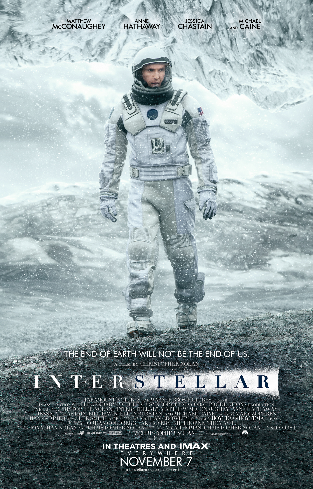

A catastrophic crop blight has made farming increasingly difficult and threatens humanity's survival. Cooper, a widowed former NASA pilot who has an engineering background, runs a farm with his father-in-law, son, and daughter Murphy, who believes her bedroom is haunted by a poltergeist. When the "ghost" creates a pattern in the dust, Cooper realizes someone is using gravity to communicate, and interprets the pattern as geographic coordinates, which Cooper and Murphy follow to a secret NASA facility, where they meet Dr. Brand, Cooper's former professor. Brand reveals that a wormhole, apparently created by an alien intelligence, appeared near Saturn 48 years before and leads to a distant galaxy, with numerous potentially habitable planets. Twelve volunteers have gone through it, knowing they may never be able to return, each to assess a planet's suitability as humanity's new home. Miller, Edmunds and Mann have sent encouraging data from planets near Gargantua, a supermassive black hole. Brand recruits Cooper to pilot the spaceship Endurance to evaluate as many of the planets as possible, while he works on "Plan A", a theory to harness gravity for propulsion, which would allow humanity to leave Earth. The Endurance also carries 5,000 frozen embryos as "Plan B", to provide for humanity's survival. Cooper agrees to go, upsetting Murphy. Cooper's crew consists of scientists Romilly, Doyle, Brand's daughter Amelia, and robots TARS and CASE. Traversing the wormhole, they head to Miller's planet, an ocean world where time is severely dilated due to its proximity to Gargantua; for each hour there, seven years pass on Earth. While Romilly and TARS remain aboard, the rest descend to the surface, where they find only wreckage. Amelia retrieves Miller's data, before a gigantic tidal wave kills Doyle. Cooper, Amelia, and CASE manage to return to Endurance, but 23 years have elapsed on Earth. Murphy, now an adult, has been assisting Dr. Brand with his research. On his deathbed, he admits to her that the gravity equation is unsolvable and Plan A impossible, and that he lied to everyone, pinning his hopes on Plan B. Murphy notifies Amelia of her father's death, then accuses her and Cooper of abandoning Earth. She continues working, believing the equations can be solved if she could somehow get more data on gravitational singularities. With limited fuel, the crew decide to go to Mann's planet, rather than Edmunds', as Mann has been sending promising data. After being revived from cryosleep, Mann assures the crew that while the frozen planet has an ammonia-laden atmosphere, the surface is livable. However, when they are alone, Mann attempts to kill Cooper, revealing that he falsified the data so he would be rescued, then heads for Endurance. Meanwhile, Romilly is killed by a booby trap Mann had set. After Amelia rescues Cooper, they race to Endurance, where Mann is attempting to dock despite being locked out of the autodocking system. Mann ignores Cooper's plea not to open the airlock, which fails catastrophically. Mann is killed and the severely damaged Endurance begins falling out of orbit. Cooper uses the landing craft to stabilize the ship. Using Gargantua's gravity as a slingshot, they head to Edmunds' planet, but their proximity to the black hole means 51 years will elapse on Earth. To shed weight, Cooper jettisons himself and TARS towards the black hole, so that Amelia and CASE can complete the journey. Cooper and TARS pass the event horizon, and find themselves inside a tesseract, which appears as a stream of bookshelves that look into Murphy's bedroom at different times. Cooper surmises that the tesseract and wormhole were created by five-dimensional beings to enable him to communicate with Murphy and that he is her "ghost". He relays in Morse code quantum data that TARS collected from the black hole by manipulating the second hand of a watch he gave to Murphy before he left, which enables Murphy to solve the gravitational equation. Cooper is ejected into normal space and awakens in a space habitat orbiting Saturn. He reunites with an aged Murphy, now near death. At Murphy's urging, Cooper and TARS leave to rejoin Amelia on Edmunds' habitable planet, where she and CASE have begun to set up a colony using Plan B.
Intersellar
